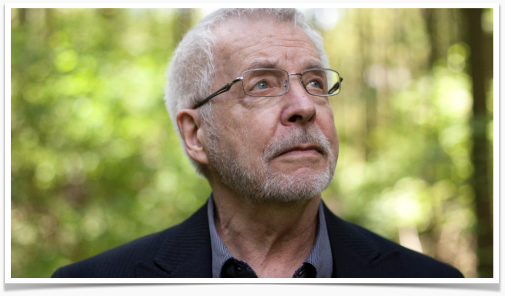

Biography
Robert D. Hare, born in Calgary, Alberta, is a pioneering psychologist whose work has fundamentally shaped the study of psychopathy. After completing his undergraduate studies, Hare pursued a Ph.D. in experimental psychology at the University of Western Ontario, where he began to explore the psychological underpinnings of criminal behavior. Early in his career, Hare worked as a psychologist at the British Columbia Penitentiary, where his observations and experiences with inmates catalyzed his lifelong dedication to understanding the personality structure and behaviors that characterize psychopathy.
Academic Career
Dr. Hare joined the faculty of the University of British Columbia, where he served as a professor of psychology and now holds the title of Emeritus Professor. His foundational research led to the development of the Psychopathy Checklist (PCL) in 1980, which was later revised to the Psychopathy Checklist-Revised (PCL-R) in 1991. This tool became the gold standard for psychopathy assessment, widely used in forensic and clinical settings around the world.
Dr. Robert Hare’s scholarly works have provided the foundation for modern psychopathy assessment and understanding. Alongside the PCL-R, Hare has authored over 200 academic publications on psychopathy, shaping both research and application in criminal justice and mental health contexts. Hare's Psychopathy: Theory and Research (1970) is one of his early influential books, presenting a structured theoretical approach to understanding psychopathy as a behavioral disorder. This publication laid groundwork for what would become Hare’s continued impact on psychological assessment and treatment approaches.
Publications & Public Outreach
In addition to his academic contributions, Dr. Hare has written extensively for the general public to promote understanding of psychopathy in everyday contexts. His influential book Without Conscience: The Disturbing World of the Psychopaths Among Us (1993) has been translated into multiple languages, reaching readers worldwide and earning acclaim as a top reference in popular psychology. Similarly, Snakes in Suits: When Psychopaths Go to Work (2006), co-authored with Dr. Paul Babiak, examines corporate psychopathy and has become a bestselling resource for understanding manipulative behaviors in business environments.
Consulting & Collaboration
Outside of academia, Dr. Robert D. Hare has served as a prominent consultant to numerous law enforcement agencies, correctional facilities, and legal organizations worldwide. His expertise in psychopathy has informed risk assessment protocols and intervention strategies used in criminal justice systems across North America and Europe. Hare has worked closely with agencies such as the Federal Bureau of Investigation (FBI) and the Royal Canadian Mounted Police (RCMP), helping to train officers and forensic experts in recognizing and managing individuals with psychopathic traits. Additionally, his input has been sought in high-stakes cases involving violent offenders, where understanding psychopathic tendencies can be crucial for profiling, interrogation, and sentencing decisions. Hare’s collaborations with correctional institutions have influenced approaches to inmate management and rehabilitation, ensuring that his insights extend beyond research settings to impact practical, real-world applications.
These works not only underscore Hare's influence within academia but have also brought psychopathy awareness to a global audience, equipping readers with insights to recognize and respond to psychopathic behaviors in various settings.
Research Focus
Dr. Robert Hare has dedicated his career to the study of psychopathy, contributing significantly to both the foundational understanding of the condition and its practical implications within criminal justice systems worldwide. His work can be divided into two core areas: basic research and applied research.
Basic Research
Dr. Hare's basic research has been instrumental in advancing the scientific understanding of psychopathy as a psychological construct. His work has explored the following areas:
- Psychological and Biological Underpinnings of Psychopathy: Dr. Hare's research has delved into the cognitive and emotional deficits that characterize psychopathy, including diminished emotional responses and impaired empathy. He has also studied the neurobiological foundations of psychopathy, examining brain activity patterns that distinguish psychopathic individuals from the general population.
- Personality Structure and Traits: Dr. Hare has investigated the core traits that define psychopathy, such as superficial charm, grandiosity, manipulativeness, and lack of remorse. His research has provided a clearer differentiation between psychopathy and other personality disorders, highlighting its unique interpersonal, affective, and behavioral characteristics.
- Dimensional Nature of Psychopathy: Dr. Hare has contributed to the understanding of psychopathy as a dimensional, rather than categorical, construct. This perspective has helped elucidate how psychopathic traits can vary in severity across individuals, providing insights into the broader spectrum of antisocial behavior.
Applied Research
In addition to his foundational research, Dr. Hare has been heavily involved in applied research, with a focus on real-world applications in the fields of criminal justice and mental health.
- Risk Assessment and Management: Dr. Hare's work has significantly impacted the assessment and management of risk within forensic and correctional settings. Beyond the PCL-R, his research has informed the development of tools and protocols used to evaluate the likelihood of violent or criminal behavior among psychopathic individuals. His contributions have provided corrections professionals with practical methods to manage high-risk offenders.
- Psychopathy in Organizational Settings: Dr. Hare has also explored the presence and impact of psychopathic traits outside of the criminal context, particularly within corporate and organizational environments. His research into "corporate psychopathy" has highlighted the ways in which individuals with psychopathic traits can ascend to positions of power, often causing significant harm through manipulative and unethical behavior.
- Training and Education for Criminal Justice Professionals: Dr. Hare has worked extensively to translate his research findings into actionable knowledge for practitioners. He has developed training programs for law enforcement, correctional officers, and mental health professionals to improve their ability to identify and manage individuals with psychopathic traits effectively, thereby enhancing public safety.
- Implications for Legal and Ethical Decision-Making: Dr. Hare's applied research also touches on the ethical and legal implications of psychopathy. His work has informed discussions on criminal responsibility, parole decisions, and the treatment of psychopathic offenders, contributing to policy development and the broader discourse on justice and rehabilitation.
Dr. Robert Hare's expertise spans both the theoretical foundations of psychopathy and its practical applications. His work has transformed how psychopathy is understood, assessed, and managed, influencing fields as diverse as criminal justice, mental health, and corporate governance. His legacy lies in bridging the gap between basic scientific inquiry and real-world application, ensuring that knowledge of psychopathy contributes to safer communities and better-informed professionals.
Awards & Recognition
In the realm of psychopathy and forensic psychology, few figures have achieved the international acclaim awarded to Dr. Robert D. Hare. His foundational work on the Psychopathy Checklist-Revised (PCL-R) has not only transformed clinical and forensic approaches to psychopathy but has garnered prestigious recognition across the globe. In 2010, Dr. Hare was appointed as a Member of the Order of Canada, a recognition given to only the most distinguished citizens for their contributions to the nation and beyond. His efforts also reached European shores, where he received the Silver Medal from Queen Sophia Center in Spain in 1999, recognizing his profound contributions to psychology and forensic assessment.
Further celebrating his scientific advancements, Dr. Hare was honored with the Canadian Psychological Association's Distinguished Scientist Award in 2000 for the applications of psychology in real-world settings. This was followed by the Isaac Ray Award from the American Psychiatric Association and the American Academy of Psychiatry and the Law in 2001, underscoring his monumental influence on forensic psychiatry and psychiatric jurisprudence.
Recognition from Professional and Forensic Associations
In the field of forensic psychology, Dr. Hare’s contributions are viewed as groundbreaking. In 2001, he received the American Academy of Forensic Psychology Award for Distinguished Contributions, a nod to his development of assessment tools used worldwide to gauge psychopathic tendencies across diverse populations. His influence extended to correctional health, where he was awarded the B. Jaye Anno Award of Excellence in Communication by the National Commission on Correctional Health Care in 2003 for enhancing understanding within correctional health.
A defining moment in the psychopathy research community came in 2005 when Dr. Hare was awarded the inaugural R.D. Hare Lifetime Achievement Award from the Society for the Scientific Study of Psychopathy. This award not only acknowledges his pioneering research but cements his legacy as a primary architect of modern psychopathy assessment and research.
Community and Institutional Recognitions
Dr. Hare’s profound impact on the criminal justice system and public safety has been honored in numerous institutional and community tributes. A National Joint Committee in Canada, composed of members from the RCMP, police forces, the National Parole Board, and the Correctional Service of Canada, held a tribute event in Vancouver in 2006. This event celebrated Dr. Hare’s lifelong dedication to improving public safety through his research, consulting, and collaboration with law enforcement and correctional institutions.
Across these many accolades, Dr. Hare’s work continues to influence both the academic study of psychopathy and practical applications in criminal justice, forensic psychology, and beyond. His work is not only a testament to his scientific prowess but also to his enduring commitment to addressing the social challenges posed by psychopathic behavior.